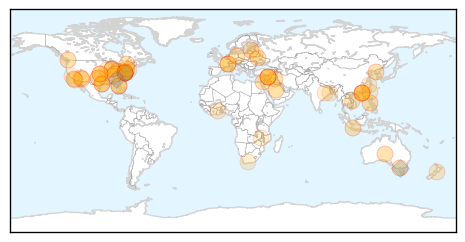
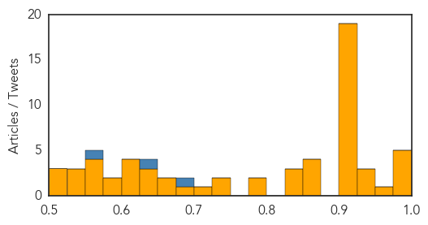
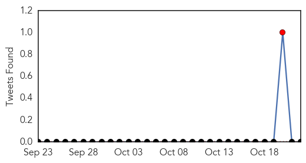

Unknown
30-Day Web Trend
0 alerts, 0 warnings

30-Day Twitter Trend
5 alerts, 0 warnings

Article Locations
Article Confidences
Top Articles:
- 0.998
- Man dies of MERS virus, first case in Turkey
- 0.995
- CDC confirms first case of enterovirus in Arizona
- 0.994
- Department of Health: First case of Enterovirus D68 confirmed in Arizona
- 0.992
- Get vaccinated now for early, season-long flu protection
- 0.982
- Kentucky records early flu cases
- 0.951
- Tuberculosis is at crisis levels, warns WHO
- 0.949
- Enterovirus link probed in deaths of girl, 3 others
- 0.936
- Flu arrives early at Washington State University
- 0.926
- Metzitzah B' Peh Warning: New Studies Show Herpes Doubles Risk Of Alzheimer's Disease
- 0.918
- FIVE CHILDREN EXPOSED TO RABID BAT SOUGHT
- 0.917
- Chicago Tribune
- 0.917
- Chicago Tribune
- 0.917
- Chicago Tribune
- 0.917
- Chicago Tribune
- 0.917
- Chicago Tribune
- 0.917
- Chicago Tribune
- 0.917
- Chicago Tribune
- 0.917
- Chicago Tribune
- 0.917
- Chicago Tribune
- 0.917
- Chicago Tribune
- 0.917
- Chicago Tribune
- 0.917
- Chicago Tribune
- 0.917
- Chicago Tribune
- 0.917
- Chicago Tribune
- 0.917
- Chicago Tribune
- 0.917
- Chicago Tribune
- 0.917
- Chicago Tribune
- 0.906
- WHO: TB one of world′s deadliest infectious diseases
- 0.866
- U.S. reports 18 strikes against Islamic militants in Syria, Iraq
- 0.866
- Germany says certificate prices in ETS must rise
- 0.866
- Indonesian president says eight cabinet choices not approved
- 0.862
- Schools Talk Hygiene In Enterovirus Scare
- 0.848
- VA getting handle on bacteria in water: Legionella bacteria found in low-use areas, not occupied patient rooms
- 0.840
- Drug-resistant tuberculosis at crisis levels, warns WHO
- 0.830
- Despite gains against tuberculosis, better research funding required – UN report
- 0.786
- Gastroenteropancreatic neuroendocrine tumors
- 0.779
- Vietnam Ministry Warns of Tsutsugamushi Disease Spreading
- 0.736
- Are seniors at risk for enterovirus D68?
- 0.732
- WHO: TB’s Toll Worse Than Thought
- 0.719
- Grindr, Craigslist and other online activity blamed for syphilis outbreak in Comanche County
- 0.699
- Syphilis outbreak confirmed in southwest Oklahoma
- 0.668
- Flu shots for all students in North Canton under pilot program
- 0.657
- Massey warns over meningococcal
- 0.649
- Being Healthy Is Wealth
- 0.641
- Girl's death not caused by HPV vaccination
- 0.631
- Map of the Day: Where People Die From Tuberculosis
- 0.623
- More people diagnosed with TB in 2013, but there's good news
- 0.619
- Drug-resistant tuberculosis at crisis levels, warns WHO
- 0.618
- Schools Talk Hygiene In Enterovirus Scare
- 0.603
- Could Enteroviruses Be Behind Rising Rates of Type 1 Diabetes?
Showing top 50 articles...
Top Tweets:
- 0.794
- Flu Tip: Ask your GP about flu vaccination. A flu shot is the best protection against the virus. http://t.co/wJyjPq5YDs
- 0.763
- RT: Flu vaccine + little boy mohawk. What's not to love at Flu Vaccine Days? vaxwithme http://t.co/TjhYFuuMTC
- 0.677
- .@HelenbrowneH The flu vax can be given to ppl w/ minor illnesses (diarrhea or mild upper resp. tract infections w/ or w/o fever)
- 0.617
- Even healthy people can get very sick from the flu and spread it to others - the flu vaccine is your best protection.http://t.co/C72szT69oi
- 0.597
- Get the facts, not the flu. Learn ways to protect your health this flu season: http://t.co/2O0bAj5Dum flufacts
- 0.578
- Flu v. Cold: Colds are usually milder than the flu & are more likely to lead to a runny nose or sore throat. http://t.co/XfQ8Gyr4LW spon
Chikungunya
30-Day Web Trend
0 alerts, 2 warnings

30-Day Twitter Trend
1 alerts, 0 warnings

Article Locations
Article Confidences
Top Articles:
- 0.998
- Belize News and Opinion on www.breakingbelizenews.com
- 0.998
- Chikungunya, mosquito-borne virus, infected more than 200 Canadians
- 0.998
- More than 200 Canadians infected with Chikungunya virus according to health agency
- 0.998
- Chikungunya virus infects 200 Canadians
- 0.978
- Virus tally nears 500,000 in Dominican Republic
- 0.750
- Trinidad and Tobago's Newsday
Top Tweets:
-
No tweets found for Oct 22, 2014